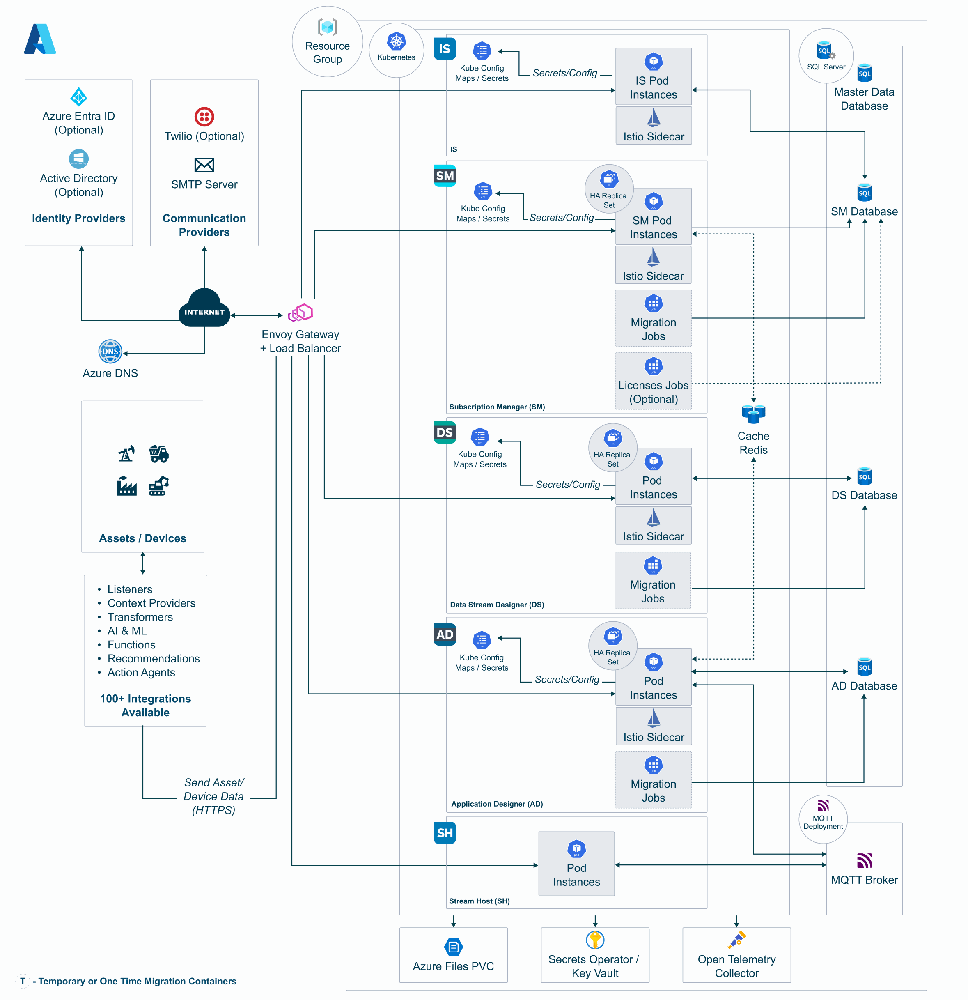

Deploy XMPro on Azure Kubernetes (AKS)
Introduction
Get XMPro running on Azure Kubernetes Service (AKS) with Terraform automation. This is the Kubernetes-native Azure deployment for the 5.0 platform.
Deployment uses a multi-layer model designed for shared clusters: one AKS cluster (with its platform controllers) can host multiple isolated XMPro sites, each with its own databases, Key Vault, DNS subzone, and Helm release. The two optional layers are Stream Hosts for a site, and the backing services for the AI product's RAG features.
| Layer | Applied | Contains |
|---|---|---|
1 - Cluster (infra-k8s) |
Once per cluster | VNet, AKS cluster, Envoy Gateway, cert-manager, External Secrets Operator, Log Analytics, shared gateway Public IP |
2 - Site infrastructure (infra) |
Once per site | Azure SQL Server + databases, Key Vault, DNS subzone + wildcard A record |
3 - Site application (app) |
Once per site | Per-site secret store (Key Vault → Kubernetes), per-site Gateway + Let's Encrypt Issuer, XMPro Helm release, HTTPRoutes |
4 (optional) - Stream Hosts (stream-hosts) |
Per site, as needed | One standalone Stream Host per Collection |
5 (optional) - AI backing services (infra-ai) |
Once per cluster (shared by all sites) | Dedicated node pool, RAG namespace (strict mTLS), Milvus, Neo4j, TimescaleDB, Mosquitto, per-stack Key Vault + storage account |
Note
This guide works on Windows, Mac, and Linux. Windows users should use Command Prompt or PowerShell. The deployment requires terraform, az, and kubectl on PATH.
Provision Infrastructure Your Own Way?
Note
Infrastructure provisioning is your responsibility. The infrastructure layers (infra-k8s, infra, infra-ai) are templates: they show how XMPro provisions these resources internally, and you can use them as-is, adapt them, or replace them entirely with your own provisioning. Only the application layer (app) is the deployment interface the platform requires; it consumes whatever infrastructure you point it at. The Terraform module in this guide is provided as an example only and is not officially supported by XMPro: you are responsible for infrastructure configuration, maintenance, and support. See the Deployment Responsibility Matrix for details.
Tip
The example module uses Standard_B2s_v2 nodes and an S0 Azure SQL Database by default, suitable for development and evaluation. B- and D-class VM SKUs are for test, development, or evaluation only, not production. See the Sizing Guideline for production sizing.
You can provision the required infrastructure using:
- The example Terraform module (community-supported)
- The Azure Portal (ClickOps)
- Your organization's infrastructure-as-code tools
The table below lists the resources the template layers (infra-k8s, infra, infra-ai) provision. Provision them yourself any way you like, the application layer (app) only consumes them.
| Scope | Component | Requirement |
|---|---|---|
| Cluster-level | Virtual Network | VNet with a subnet for the AKS nodes |
| Cluster-level | AKS cluster | Kubernetes 1.34+ (AKS long-term support version) with system + app node pools, OIDC issuer enabled |
| Cluster-level | Load balancer | No controller to install: AKS provisions a Standard Azure Load Balancer from the gateway's Kubernetes Service, bound to the static Public IP below |
| Cluster-level | Envoy Gateway controller | Installed cluster-wide, with a GatewayClass (eg) |
| Cluster-level | cert-manager | Installed cluster-wide with Gateway API support enabled (config.enableGatewayAPI=true) |
| Cluster-level | Istio (base + istiod) | Installed cluster-wide, or set enable_istio = false in the application layer. The AKS template does not install Istio CNI, so Pod Security is not enforced (see Cluster-Level Components) |
| Cluster-level | External Secrets Operator | Installed cluster-wide (external-secrets namespace), with a managed identity that each site grants access to its own Key Vault |
| Cluster-level | Static Public IP | In the node resource group, used by the gateway service |
| Per site | Azure SQL Server | With 3-4 databases (SM, AD, DS, and optionally AI) |
| Per site | Key Vault | For application secrets, consumed by External Secrets Operator |
| Per site | Container registry pull secret | Created by the application layer from your GHE credentials; see Registry authentication |
| Per site | DNS zone or subzone | With an A record pointing at the gateway Public IP |
| Optional (AI RAG only) | AI backing services | Vector store (Milvus), graph database (Neo4j), time-series database (TimescaleDB), and MQTT broker (Mosquitto), all reachable from the cluster |
| Optional (AI RAG only) | AI services provisioning | The optional layer 5 template (infra-ai, examples/layered/infra-ai) provisions all of these on a dedicated node pool, applied once per cluster and shared across its sites |
| Optional (AI RAG only) | AI app-layer inputs | When enable_ai_rag = true, the application layer requires the TimescaleDB and Neo4j connection strings (its AI database-migration Job runs their schema migrations); the other services are consumed in-cluster, not via application-layer inputs |
Once you've created these resources, you still need Steps 1-4 (install the CLI tools, sign in to Azure, confirm your registry credential, and clone the module for its app layer), then skip ahead to Step 8: Deploy the Site Application Layer and provide the details in your configuration.
Architecture

The Terraform layers that build this:
┌────────────────────────────────────────────────────────────────┐
│ Layer 1 - Cluster (examples/layered/infra-k8s) │
│ Apply ONCE per cluster │
│ - VNet + AKS subnet │
│ - AKS cluster + system / app node pools, OIDC issuer │
│ - Envoy Gateway controller (cluster-wide) │
│ - cert-manager with Gateway API support (cluster-wide) │
│ - External Secrets Operator + its managed identity │
│ - Log Analytics + Application Insights │
│ - Static gateway Public IP (shared by all sites) │
└────────────────────────────────────────────────────────────────┘
│
▼ per site
┌────────────────────────────────────────────────────────────────┐
│ Layer 2 - Site infrastructure (examples/layered/infra) │
│ Apply once PER SITE │
│ - SQL Server + SM / AD / DS (/ AI) databases │
│ - Key Vault (per-site secrets) │
│ - DNS subzone + wildcard A record → gateway Public IP │
└────────────────────────────────────────────────────────────────┘
│
▼ per site
┌────────────────────────────────────────────────────────────────┐
│ Layer 3 - Site application (examples/layered/app) │
│ Apply once PER SITE │
│ - Per-site secret store (Key Vault → K8s) │
│ - Per-site Gateway + Let's Encrypt Issuer │
│ - XMPro Helm release: SM, IS, AD, DS, optional AI, │
│ default Stream Host, dbmigrate + licenses Jobs │
│ - Gateway API HTTPRoutes per product │
└────────────────────────────────────────────────────────────────┘
│
▼ per site, as needed
┌────────────────────────────────────────────────────────────────┐
│ Layer 4 (optional) - Stream Hosts (site-template/stream-hosts)│
│ - One standalone Stream Host Helm release per Collection │
└────────────────────────────────────────────────────────────────┘
┌────────────────────────────────────────────────────────────────┐
│ Layer 5 (optional) - AI backing services │
│ (examples/layered/infra-ai) │
│ Apply ONCE per cluster (shared by all sites) │
│ - Dedicated AI node pool │
│ - RAG namespace with strict mTLS │
│ - Milvus, Neo4j, TimescaleDB, Mosquitto │
│ - Per-stack Key Vault + storage account │
└────────────────────────────────────────────────────────────────┘
Traffic flow: https://{ad,ds,sm,ai}.<site-zone> → Azure Load Balancer (static Public IP) → Envoy Gateway → HTTPRoute → product Service. The sm. hostname is path-split: /identity/* routes to the Identity Server (IS); everything else routes to Subscription Manager (SM).
Cluster-Level Components
Layer 1 installs a fixed set of platform components into the cluster, once per cluster. Every site's application layer assumes they are already present: layer 3 creates only per-site resources - the secret store, Gateway, Issuer, HTTPRoutes and Helm release - and binds them to these shared components. Adding a site never installs or upgrades any of them.
| Component | Namespace | Purpose |
|---|---|---|
| Envoy Gateway | envoy-gateway-system |
Gateway API data plane; provides the GatewayClass the sites' Gateway resources bind to |
| cert-manager | cert-manager |
Issues Let's Encrypt certificates for product hostnames via HTTP-01 |
| External Secrets Operator | external-secrets |
Syncs Azure Key Vault secrets into Kubernetes Secrets the chart consumes |
| istio-base | istio-system |
Istio CRDs |
| istiod | istio-system |
Istio control plane and sidecar injection |
There is no load balancer controller in this list because Azure provisions the gateway's load balancer natively from its Kubernetes Service, using the static Public IP the cluster layer creates. If you build the cluster yourself instead of applying layer 1, these are the components you install. Provision Infrastructure Your Own Way? lists them alongside the rest of the infrastructure the application layer expects.
To confirm what an existing cluster already has:
All platforms:
helm list -A
Note
No Istio CNI, so Pod Security is not enforced. The cluster layer does not install the Istio CNI plugin, so injected pods use the classic Istio sidecar init container, which requires NET_ADMIN and root. Pod Security baseline rejects that container, so the application layer's pod_security_enforce defaults to "": enforcement is disabled, and pod_security_standard = "baseline" applies audit and warn labels only. The AWS Kubernetes deployment does install Istio CNI and therefore defaults pod_security_enforce to baseline.
Prerequisites
You need:
- An Azure subscription with permissions to create the resources in the layers you apply (Virtual Network, AKS, Virtual Machine Scale Sets, Azure SQL, Key Vault, Azure DNS, Public IP and Load Balancer, Managed Identity, Log Analytics and Application Insights; Azure Cache for Redis if you enable autoscale), which Contributor on the subscription or target resource groups covers, and with vCPU quota that leaves room for them
- A computer with internet access
- Read access to the repository XMPro delivered the deployment files to
- Credentials for the container registry named in your delivery package (
{{ACR_URL}}in this guide)
For how the deployment assets (Terraform modules, container images, and security artifacts) are delivered to your organisation, see Getting the deployment assets in the Installation Overview. The repository URL and container registry credentials used in this guide are confirmed as part of your delivery package.
Quick Deployment
1. Install Required Tools
Install these on your computer:
- Git: Download here
- Terraform: Download here (>= 1.7)
- Azure CLI: Download here (>= 2.50)
- kubectl: Download here (1.30+)
Verify they work:
All platforms:
git --version
terraform version
az version
kubectl version --client
2. Login to Azure
All platforms:
az login
az account set --subscription "YOUR-SUBSCRIPTION-NAME-OR-ID"
az account show
Tip
Terraform automatically uses your Azure CLI credentials. For CI/CD pipelines, prefer OIDC workload identity federation (ARM_USE_OIDC=true) over a long-lived service principal secret.
3. Registry Authentication
XMPro's container images live in {{ACR_URL}} and are not anonymously pullable. Confirm your credential works now — this fails in seconds, where a bad or expired token otherwise surfaces as ImagePullBackOff fifteen minutes into an apply.
All platforms:
read -rs GHE_PAT # prompts, so the token never lands in shell history
printf '%s' "$GHE_PAT" | docker login containers.xmpro.ghe.com -u YOUR-GHE-USERNAME --password-stdin
docker manifest inspect {{ACR_URL}}/ad:{{VERSION}}
Both commands must succeed before you continue.
Important
That login authenticates you, not the cluster. Terraform does not pull images — the cluster nodes do, using a pull secret inside the namespace. You supply the credentials once, in the application layer (step 8), and it creates that secret for you. Logging in locally and skipping the Terraform variables leaves every pod in ImagePullBackOff.
Pull secrets are namespaced, so one is created per site rather than per cluster. Either set registry_username and registry_password in the application layer and let it create the secret, or create the secret yourself and name it in image_pull_secrets so the credentials never touch Terraform state.
To create the secret yourself, the namespace has to exist first. It is the site's name_suffix, and the application layer creates it — so either run this after the first application-layer apply, or create the namespace up front with kubectl create namespace <name_suffix> and the application layer will adopt it.
export GHE_USERNAME=your-ghe-username
read -rs GHE_PAT # prompts, so the token never lands in shell history
tmp="$(mktemp -d)"; trap 'rm -rf "$tmp"' EXIT
printf '%s' "$GHE_PAT" | DOCKER_CONFIG="$tmp" docker login containers.xmpro.ghe.com \
-u "$GHE_USERNAME" --password-stdin
kubectl create secret generic xmpro-registry \
--from-file=.dockerconfigjson="$tmp/config.json" \
--type=kubernetes.io/dockerconfigjson \
-n <name_suffix>
Then set image_pull_secrets = ["xmpro-registry"] in the application layer and leave registry_username and registry_password empty.
4. Get the Deployment Files
Use the deployment repository URL from your delivery package as <deployment-repository-url> below.
Windows (PowerShell):
git clone <deployment-repository-url> terraform-k8s
cd terraform-k8s\terraform-xmpro-aks\examples\layered\infra-k8s
Copy-Item terraform.tfvars.example terraform.tfvars
Windows (Command Prompt):
git clone <deployment-repository-url> terraform-k8s
cd terraform-k8s\terraform-xmpro-aks\examples\layered\infra-k8s
copy terraform.tfvars.example terraform.tfvars
Mac/Linux:
git clone <deployment-repository-url> terraform-k8s
cd terraform-k8s/terraform-xmpro-aks/examples/layered/infra-k8s
cp terraform.tfvars.example terraform.tfvars
At minimum, edit these values in terraform.tfvars:
subscription_id = "00000000-0000-0000-0000-000000000000"
company_name = "yourco" # Drives resource naming
name_suffix = "dev" # Cluster identifier
location = "australiaeast" # Your target region
kubernetes_version = "1.34"
system_node_vm_size = "Standard_B2s_v2" # B/D-class is fine for test/dev/evaluation, not production
system_node_count = 1
app_node_vm_size = "Standard_B2s_v2"
app_node_count = 1 # see the sizing guide before the first apply
# Shared by every site on this cluster
gateway_public_ip_name = "pip-gateway-cluster"
Important
Size the application node pool before this first apply. The install peak (products plus the database-migration and licensing Jobs, each with an Istio sidecar) is well above the steady state. See the Sizing Guideline for how to choose the VM SKU and count, and how to resize an existing pool.
Warning
Do not use xmpro as company_name. It collides with a hardcoded XMPro company in the SM database migration scripts (case-insensitive unique constraint).
5. Deploy Layer 1 - Cluster
The cluster layer configures Kubernetes/Helm providers from the AKS cluster it creates, so a first (greenfield) apply must be done in two phases: create the cluster first, then apply the rest (the platform controllers, which need a reachable cluster):
All platforms:
terraform init
terraform apply -target=module.cluster.module.aks_cluster # Phase 1: create the AKS cluster. Type 'yes' when asked
terraform apply # Phase 2: everything else
Important
Running a plain terraform apply first on a greenfield deployment fails: the k8s-backed providers cannot authenticate against a cluster that doesn't exist yet. The two-phase apply is only needed once; subsequent applies against the existing cluster are single-phase.
This creates the VNet, AKS cluster, Envoy Gateway, cert-manager, External Secrets Operator, Istio (with the shared gateway joined to the mesh), monitoring, and the shared gateway Public IP. Takes about 10-15 minutes. You do this once per cluster, additional sites reuse it. See Cluster-Level Components for what each of these controllers does and the namespace it lands in.
Point kubectl at the new cluster. Run terraform output and copy the values into the command (later steps reuse them):
All platforms:
terraform output
Sample output (values are examples, use your own):
app_insights_connection_string = "InstrumentationKey=00000000-0000-0000-0000-000000000000;IngestionEndpoint=https://australiaeast-1.in.applicationinsights.azure.com/"
cluster_name = "aks-yourco-dev"
cluster_pip_ip = "20.53.12.34"
gateway_class_name = "eg"
resource_group_name = "rg-aks-yourco-dev"
Then point kubectl at the cluster using the resource_group_name and cluster_name values:
All platforms:
az aks get-credentials --resource-group rg-aks-yourco-dev --name aks-yourco-dev
Mac/Linux (substitute straight from Terraform instead of copy/paste):
az aks get-credentials \
--resource-group "$(terraform output -raw resource_group_name)" \
--name "$(terraform output -raw cluster_name)"
6. Deploy Layer 2 - Site Infrastructure
Windows (PowerShell):
cd ..\infra
Copy-Item terraform.tfvars.example terraform.tfvars
Windows (Command Prompt):
cd ..\infra
copy terraform.tfvars.example terraform.tfvars
Mac/Linux:
cd ../infra
cp terraform.tfvars.example terraform.tfvars
Edit terraform.tfvars with the values from layer 1 (terraform.tfvars is gitignored, so the credentials you fill in stay local):
subscription_id = "00000000-0000-0000-0000-000000000000"
company_name = "yourco"
name_suffix = "site1" # Unique per site on this cluster
location = "australiaeast" # Region for this site's new resource group
# This layer creates its own resource group, rg-aks-yourco-site1,
# separate from the cluster resource group.
acr_name = "xmpro" # Registry providing pull access
# --- DNS ---
enable_custom_domain = true
dns_zone_name = "site1.xmpro.yourco.com"
# [from layer 1] terraform output cluster_pip_ip
cluster_pip_ip = "20.x.x.x"
# --- Database ---
db_admin_username = "xmadmin"
db_admin_password = "ChangeMe123!Strong"
db_sku_name = "S0" # Bump for production
db_max_size_gb = 2
Apply:
terraform init
terraform plan # Validates config; most input mistakes fail here, not mid-apply
terraform apply
Tip
Always run terraform plan first. It validates the configuration and reads existing state without creating anything, so most input mistakes - a typo in an id, a missing required variable - cost you seconds instead of a failed apply you have to unpick. It does not perform service-side validation: a value the cloud rejects (such as a SQL password the server refuses) still plans cleanly and fails during terraform apply.
This creates the site's own resource group (rg-aks-yourco-site1, separate from the cluster resource group) containing the site's SQL Server with the SM, AD, and DS databases, Key Vault, and DNS subzone (with wildcard A record at the gateway IP). Takes about 5 minutes.
Verify before continuing
Collect the values Step 8 needs:
All platforms:
terraform output
Sample output (values are examples, use your own):
ad_database_name = "sqldb-aks-yourco-site1-ad"
ai_database_name = ""
ds_database_name = "sqldb-aks-yourco-site1-ds"
sm_database_name = "sqldb-aks-yourco-site1-sm"
resource_group_name = "rg-aks-yourco-site1"
dns_zone_name = "site1.xmpro.yourco.com"
dns_zone_name_servers = tolist([
"ns1-01.azure-dns.com.",
"ns2-01.azure-dns.net.",
"ns3-01.azure-dns.org.",
"ns4-01.azure-dns.info.",
])
key_vault_id = "/subscriptions/00000000-0000-0000-0000-000000000000/resourceGroups/rg-aks-yourco-site1/providers/Microsoft.KeyVault/vaults/kv-yourco-site1"
key_vault_name = "kv-yourco-site1"
key_vault_uri = "https://kv-yourco-site1.vault.azure.net/"
sql_server_fqdn = "sql-aks-yourco-site1.database.windows.net"
Tip
Keep this output open. Every value in it is copied into the application layer's terraform.tfvars in Step 8.
7. Point DNS at the Gateway
Before deploying the application layer, the product hostnames (ad., ds., sm., and ai. if enabled, under your dns_zone_name) must resolve publicly to the gateway Public IP from layer 1. cert-manager's Let's Encrypt HTTP-01 challenge fails otherwise, and without a certificate the SM and IS products never start. Pick one of the two options below.
Warning
Both options keep enable_custom_domain = true in the application layer (as set in Step 8): that is what creates the per-product HTTPRoutes and the Let's Encrypt certificate. Setting it false in the application layer creates no HTTPRoutes and no TLS at all; the products are then reachable only via kubectl port-forward to their Services, so use it for smoke tests only.
Option A - Point A records at the gateway (simplest)
Use this when your DNS is hosted anywhere with an A-record editor (Azure DNS, Route53, GoDaddy, Cloudflare, your corporate DNS), or when you want the fewest moving parts. Set enable_custom_domain = false in the layer 2 terraform.tfvars so no Azure DNS subzone or wildcard record is created, then create an A record for each product hostname in the DNS provider you already use, all pointing at the gateway Public IP from layer 1 (terraform output cluster_pip_ip):
ad.site1.xmpro.yourco.com A 20.53.12.34
ds.site1.xmpro.yourco.com A 20.53.12.34
sm.site1.xmpro.yourco.com A 20.53.12.34
ai.site1.xmpro.yourco.com A 20.53.12.34 (only if enable_ai = true)
A single wildcard record (*.site1.xmpro.yourco.com → the gateway Public IP) works too. Then skip to Verify before continuing.
Option B - Delegate an Azure DNS subzone (if you own the parent zone in Azure DNS)
If you set enable_custom_domain = true in layer 2 (as shown in Step 6), that apply created the site1.xmpro.yourco.com subzone with a wildcard A record at the gateway Public IP. Its parent zone must delegate to it.
Tip
If the parent zone is an Azure DNS zone in the same subscription, layer 2 can create the delegation for you, no manual steps: set manage_parent_dns_delegation = true, parent_dns_zone_name and parent_dns_zone_resource_group in the layer-2 terraform.tfvars (see its terraform.tfvars.example) and apply. The manual steps below are only needed when the parent zone lives elsewhere.
To delegate manually, get the subzone's nameservers:
terraform output dns_zone_name_servers
Add an NS record in the parent zone for the subzone pointing at the four nameservers shown.
Using Azure DNS for the parent zone:
az network dns record-set ns create \
--resource-group <parent-zone-rg> --zone-name xmpro.yourco.com \
--name site1 --ttl 300
for ns in $(terraform output -json dns_zone_name_servers | jq -r '.[]'); do
az network dns record-set ns add-record \
--resource-group <parent-zone-rg> --zone-name xmpro.yourco.com \
--record-set-name site1 --nsdname "$ns"
done
Using an external provider for the parent zone (GoDaddy, Cloudflare, etc.): create the same NS records for the subzone in your provider's console.
Important
Wait for the delegation to propagate before applying the app layer. A freshly-delegated zone can take a few minutes to resolve from all of Let's Encrypt's validation vantage points: applying too early can make the first certificate order fail a challenge, after which cert-manager backs off (up to ~1 hour) before retrying. Recovery is to kubectl delete certificate xmpro-le-tls -n <name_suffix> and re-apply.
Verify before continuing
Whichever option you used, confirm every enabled hostname resolves to the gateway Public IP before applying the application layer. Option A creates one A record per product, so checking only ad will miss a record you forgot and the omission surfaces later as a failed certificate order. Check ad, ds and sm, plus ai when enable_ai = true:
Windows (PowerShell):
"ad","ds","sm","ai" | ForEach-Object { Resolve-DnsName "$_.site1.xmpro.yourco.com" -Type A }
Mac/Linux:
for h in ad ds sm ai; do echo -n "$h: "; dig +short $h.site1.xmpro.yourco.com; done
Sample output (your gateway IP will differ):
ad: 20.53.12.34
ds: 20.53.12.34
sm: 20.53.12.34
ai: 20.53.12.34
Drop ai from the list when enable_ai = false. If any hostname returns nothing, or returns anything other than your gateway Public IP, stop here. Applying the application layer now will fail certificate issuance and put cert-manager into a back-off that takes up to an hour to clear.
8. Deploy the Site Application Layer
Windows (PowerShell):
cd ..\app
Copy-Item terraform.tfvars.example terraform.tfvars
Windows (Command Prompt):
cd ..\app
copy terraform.tfvars.example terraform.tfvars
Mac/Linux:
cd ../app
cp terraform.tfvars.example terraform.tfvars
Edit terraform.tfvars with values from layers 1 and 2 (terraform.tfvars is gitignored, so the credentials you fill in stay local):
subscription_id = "00000000-0000-0000-0000-000000000000"
company_name = "yourco"
name_suffix = "site1"
location = "australiaeast"
# --- Credentials ---
db_admin_password = "ChangeMe123!Strong" # same password as layer 2
company_admin_password = "YourCompanyPassword123!"
site_admin_password = "YourSitePassword123!"
# [from layer 2] terraform output resource_group_name - the site RG, not the cluster RG
resource_group_name = "rg-aks-yourco-site1" # RG holding the site Key Vault; ESO's KV role assignment is created here
# [from layer 1] terraform output cluster_name / resource_group_name
cluster_name = "aks-yourco-dev"
aks_resource_group_name = "rg-aks-yourco-dev" # RG of the AKS cluster; used to fetch cluster credentials for the Helm/kubectl providers
# [from layer 2] terraform output - key_vault_name / key_vault_id / key_vault_uri,
# sql_server_fqdn, ad_database_name / ds_database_name / sm_database_name
key_vault_name = "kv-yourco-site1"
key_vault_id = "/subscriptions/00000000-0000-0000-0000-000000000000/resourceGroups/rg-aks-yourco-site1/providers/Microsoft.KeyVault/vaults/kv-yourco-site1"
key_vault_uri = "https://kv-yourco-site1.vault.azure.net/"
sql_server_fqdn = "sql-aks-yourco-site1.database.windows.net"
ad_database_name = "sqldb-aks-yourco-site1-ad"
ds_database_name = "sqldb-aks-yourco-site1-ds"
sm_database_name = "sqldb-aks-yourco-site1-sm"
# External Secrets Operator: installed by the cluster layer (layer 1). The site
# reads the ESO identity's principal ID from the ESO ServiceAccount annotation.
# Nothing to set here; see the note below for the override.
# existing_eso_principal_id = "" # override only - see note below
# --- Container images ---
image_registry = "{{ACR_URL}}"
image_tag = "{{VERSION}}"
# Creates the pull secret in this site's namespace. Both values are written to
# Terraform state; see step 3 for the out-of-band alternative.
registry_username = "YOUR-GHE-USERNAME"
registry_password = "YOUR-GHE-PAT"
# --- Company admin ---
company_admin_first_name = "Admin"
company_admin_last_name = "User"
company_admin_email_address = "admin.user@yourco.com"
# --- Ingress / DNS / TLS ---
enable_custom_domain = true
dns_zone_name = "site1.xmpro.yourco.com"
letsencrypt_email = "ops@yourco.com" # receives Let's Encrypt expiry notices
gateway_class_name = "eg" # [from layer 1] terraform output gateway_class_name
# --- Features ---
enable_ai = false
enable_default_stream_host = true # one in-cluster Stream Host; more per Collection in layer 4 (Step 10)
enable_licenses = true
enable_autoscale = false # Redis-backed multi-replica products; see the sizing guide
# --- Service mesh + Pod Security (defaults shown) ---
enable_istio = true
istio_peer_authentication = "PERMISSIVE" # STRICT = enforced in-cluster mTLS
pod_security_standard = "baseline" # audit/warn only; no enforce on AKS (no Istio CNI)
# --- Product IDs / Keys ---
# Leave empty for evaluation defaults; supply real values for licensed deployments
# sm_product_id = ""
# sm_product_key = ""
Tip
Leaving the product ID/key variables empty pins them to XMPro's public evaluation values, useful for demos and trials without supplying real licence material.
Istio is on by default. The application layer deploys with Istio sidecar injection enabled and the baseline Pod Security Standard in audit and warn mode only (AKS has no Istio CNI, so it is not enforced). enable_istio, istio_peer_authentication, pod_security_standard and pod_security_enforce can all be set here. Istio injection needs istiod on the cluster, which the cluster layer installed in Step 5; on a cluster without Istio set enable_istio = false, or the apply fails on the PeerAuthentication CRD. STRICT requires the shared gateway inside the mesh (the cluster layer meshes it by default); an unmeshed gateway with STRICT refuses all ingress to the site.
External Secrets Operator is already there. The cluster layer installed it in Step 5 with its own managed identity (uami-eso-<name_suffix>, in the cluster resource group) and stamped that identity's principal ID on the operator's ServiceAccount as the xmpro.com/eso-principal-id annotation. This layer reads the annotation and grants the identity access to the site's Key Vault. There is nothing to set here, and nothing changes when you add more sites. All credentials live in one place: the site's Key Vault, which External Secrets Operator copies into the namespace as the xmpro-secrets Kubernetes Secret.
Important
Set existing_eso_principal_id only if External Secrets Operator was installed outside the cluster layer and the xmpro.com/eso-principal-id annotation is missing (az identity show -g <cluster-rg> -n uami-eso-<cluster-name_suffix> --query principalId -o tsv). Do not point it at the cluster's kubelet identity: the sync fails with 403 ForbiddenByRbac, xmpro-secrets is never created, and the install rolls back.
Note
Where the pull secret comes from. registry_username and registry_password make this layer create the dockerconfigjson secret in the site namespace and wire every workload to it. image_pull_secrets is for a secret you created yourself (Step 3); the two are merged. External Secrets Operator cannot serve this: its secrets are type Opaque, and Kubernetes ignores those for image pulls. Naming a secret that does not exist lets terraform apply succeed and then leaves the pods in ImagePullBackOff.
Deploy:
All platforms:
terraform init
terraform plan # Validates config; most input mistakes fail here, not mid-apply
terraform apply
A single apply installs the per-site Gateway and Let's Encrypt Issuer, wires External Secrets Operator to the site's Key Vault, and deploys the XMPro Helm release with its database migration and licensing Jobs. Takes about 8-12 minutes, including certificate issuance.
Note
First deploys are the slowest. Every container image is pulled cold and the database-migration and licensing Jobs run inside the Helm install (timeout 30 minutes). Pods can keep converging for several minutes after terraform apply returns: check kubectl get pods -n <name_suffix> and wait for all products to reach Running before judging a deploy failed.
9. Access XMPro
All platforms:
kubectl get pods -n site1
kubectl get certificate -n site1
kubectl get httproute -n site1
Sample output (pod name suffixes will differ):
NAME READY STATUS RESTARTS AGE
xmpro-ad-6c9f8b7d5c-4x2kt 2/2 Running 0 4m59s
xmpro-ad-dbmigrate-def34 0/2 Completed 0 6m17s
xmpro-ds-7d8c6b5f4a-9pqr2 2/2 Running 0 4m59s
xmpro-ds-dbmigrate-ghi56 0/2 Completed 0 6m
xmpro-is-8f6d5c4b3a-7lk9w 2/2 Running 0 4m59s
xmpro-licenses-jkl78 0/2 Completed 0 5m26s
xmpro-sh-6b5c4d3e2f-3jh8x 2/2 Running 0 4m59s
xmpro-sm-5b7c9d8e6f-2mn4v 2/2 Running 0 4m59s
xmpro-sm-dbmigrate-abc12 0/2 Completed 0 5m43s
NAME READY SECRET AGE
xmpro-le-tls True xmpro-le-tls 6m46s
xmpro-sm-token True xmpro-sm-token-cert 6m45s
NAME HOSTNAMES AGE
xmpro-ad ["ad.site1.xmpro.yourco.com"] 5m
xmpro-ds ["ds.site1.xmpro.yourco.com"] 5m
xmpro-https-redirect ["ad.site1.xmpro.yourco.com","ds.site1.xmpro.yourco.com","sm.site1.xmpro.yourco.com"] 5m
xmpro-sm ["sm.site1.xmpro.yourco.com"] 5m
xmpro-sm-identity ["sm.site1.xmpro.yourco.com"] 5m
xmpro-sm-root ["sm.site1.xmpro.yourco.com"] 5m
What "good" looks like:
- Every product pod (
xmpro-ad,xmpro-ds,xmpro-is,xmpro-sm,xmpro-sh) showsRunningand2/2ready. The second container is the Istio sidecar; a pod stuck at1/2usually means sidecar injection failed. - The four Jobs (
xmpro-ad-dbmigrate,xmpro-ds-dbmigrate,xmpro-sm-dbmigrate,xmpro-licenses) showCompletedwith0/2ready. For a Job,Completedis success, not failure. - Both certificates show
READY=True. If either showsFalse, DNS is the usual cause; go back to Step 7. - Six HTTPRoutes exist.
xmpro-sm,xmpro-sm-identityandxmpro-sm-rootall share thesm.hostname because that hostname is path-split between Subscription Manager and the Identity Server.
Smoke-test the gateway:
Mac/Linux:
curl -s -o /dev/null -w "%{http_code}" https://ad.site1.xmpro.yourco.com/
# 302 = healthy (redirect to login)
Windows (PowerShell):
curl.exe -s -o /dev/null -w "%{http_code}" https://ad.site1.xmpro.yourco.com/
# 302 = healthy (redirect to login)
Login at https://sm.<your-site-zone>/:
| Account Type | Username | Password | Purpose |
|---|---|---|---|
| Company Admin | admin.user@yourco.onxmpro.com |
Your company_admin_password |
Company management, normal operations |
| Site Admin | admin@xmpro.onxmpro.com |
Your site_admin_password |
Full system access, license management |
Note
The company-admin username is built from your company_admin_first_name, company_admin_last_name, and company_name values as firstname.lastname@<company_name>.onxmpro.com.
10. Deploy Stream Hosts
On AKS the application layer installs one default in-cluster Stream Host (enable_default_stream_host defaults to true), which is the xmpro-sh pod above. It registers with DS on first start. Further Stream Hosts are deployed through the dedicated fourth layer: one Helm release per Collection, each with its own collection id and secret. Create the Collection in DS first (see Post Deployment Guide), then:
Mac/Linux:
# Stream Hosts live in the site-template tree, not examples/layered
cd ../../../environments/site-template/stream-hosts
cp template.tfvars.example terraform.tfvars
subscription_id = "00000000-0000-0000-0000-000000000000"
cluster_name = "aks-yourco-dev" # layer 1
name_suffix = "site1"
resource_group_name = "rg-aks-yourco-site1" # layer 2 (site RG)
key_vault_name = "kv-yourco-site1" # layer 2
namespace = "site1"
cluster_secret_store_name = "azurekv-site1" # azurekv-<name_suffix> by default
image_registry = "{{ACR_URL}}"
image_tag = "{{VERSION}}"
ds_server_url = "https://ds.site1.xmpro.yourco.com/"
stream_hosts = {
ingest = {
collection_id = "<collection-id-from-DS>"
collection_secret = "<collection-secret>"
gateway_name = "SH-AKS-site1-ingest"
}
}
terraform init
terraform apply
Confirm the Stream Host shows online in DS → Stream Hosts. Add an entry to stream_hosts for every further Collection and re-apply.
Adding More Sites to the Same Cluster
This is where the layered model pays off. For each additional site, repeat only layers 2, 3, and (as needed) 4 with a new name_suffix:
# Layer 2 with name_suffix = "site2", dns_zone_name = "site2.xmpro.yourco.com"
# Layer 3 with the matching outputs
# Layer 4 for that site's Stream Hosts
Each site gets its own namespace, databases, Key Vault, DNS subzone, and TLS certificates, fully isolated, sharing only the cluster, controllers, and gateway IP. The cluster-wide controllers, External Secrets Operator among them, are reused as-is: no application-layer setting changes between the first site and the tenth.
Enabling the AI Product Later
Deployed without AI and want to add it afterwards? No redeployment is needed. Re-apply the existing layers in this order:
- AI backing services (only for the RAG feature; once per cluster, skip if already applied): apply the
infra-aitemplate (examples/layered/infra-ai). Note itstimescaledb_endpointandneo4j_bolt_urioutputs, and the passwords you set in its tfvars. - Site infrastructure (
infra): setenable_ai = truein the site'sterraform.tfvarsand re-apply. This adds the site's AI database to the existing SQL server. Note theai_database_nameoutput. - Site application (
app): in the site'sterraform.tfvarsset:
Re-apply. The AI database-migration Job runs the SQL (and, with RAG, the TimescaleDB and Neo4j) migrations, the AI product deploys, and theenable_ai = true ai_database_name = "sqldb-aks-yourco-site1-ai" # from step 2 # RAG only - built from the infra-ai endpoints and the passwords you set there enable_ai_rag = true ai_timescaledb_connection_string = "<Npgsql connection string to the TimescaleDB endpoint>" ai_neo4j_connection_string = "<connection string to the Neo4j bolt endpoint>"ai.hostname starts routing. Takes about 5-8 minutes. - Verify:
kubectl get pods -n <name_suffix>shows the AI podRunning(theai-dbmigrateJob showsCompleted), andhttps://ai.<your-site-zone>/redirects to sign-in.
Note
Enabling AI without RAG is simpler: skip step 1, leave enable_ai_rag = false, and no connection strings are needed. Steps 2 and 3 with enable_ai = true are enough.
That's It!
XMPro is now running on Azure Kubernetes (AKS).
Your deployment includes:
- ✅ All XMPro applications (SM, IS, AD, DS, optional AI, Stream Host)
- ✅ Azure SQL Database with per-product databases, schema migrated by Helm Jobs
- ✅ Envoy Gateway with per-product HTTPRoutes on a static Public IP
- ✅ Auto-renewing Let's Encrypt TLS certificates (cert-manager)
- ✅ Secrets in Azure Key Vault, materialized into the cluster by External Secrets Operator
- ✅ Application Insights connection for telemetry
- ✅ Multi-site ready: add sites without touching the cluster layer
Tip
In addition to the Application Insights connection above, XMPro can export traces, metrics, and logs over OTLP to an observability backend of your choice. This is opt-in and runs alongside the Azure-native monitoring rather than replacing it. See Configure OpenTelemetry.
What's Next?
For guides on setting up your first tenant, uploading agents and connectors, or deploying additional stream hosts, refer to the Post Deployment Guide.
Migrating from an existing XMPro v4.x Azure App Service deployment? See the Migration Guide from App Service.
Need Help?
Common Issues
terraform: command not found
→ Terraform isn't installed yet. Go back to step 1.
Please run 'az login' from Terraform (or AADSTS70043 token errors)
→ Run az login (or az login --use-device-code for headless environments) and re-run terraform. This can happen even while az account show still succeeds: cached CLI responses keep working after your organisation's sign-in policy has expired the refresh token, but Terraform requests fresh tokens and fails. A fresh az login clears it.
Cluster authentication failed from kubectl
→ Refresh kubeconfig: az aks get-credentials --resource-group <rg> --name <aks> --overwrite-existing.
Certificates stuck at READY=False
→ NS delegation likely missing or not propagated. Verify dig ad.<site-zone> +short (Windows: Resolve-DnsName ad.<site-zone> -Type A) returns the gateway Public IP. Then kubectl describe certificate -n <name_suffix> for the cert-manager error detail.
The app layer times out and rolls back; a product pod was Pending with FailedScheduling ... Insufficient memory
→ The application node pool is too small for the install. The database-migration and licensing Jobs run alongside the products, and with Istio injection every one of those pods carries a sidecar, so the install peak is well above the steady-state total. The Helm release is atomic, so one unschedulable pod rolls the whole site back. Scale the pool (az aks nodepool scale) and re-apply; see the Sizing Guideline.
terraform apply failed partway through
→ This is normal and recoverable: Terraform records everything it already created, so re-running terraform apply continues from where it stopped rather than starting over. Fix the error it reported first. Two rules: do not delete the terraform.tfstate file, and do not manually delete resources in the Azure Portal - both leave Terraform unable to reconcile what exists. If you want to see what it believes exists so far, run terraform state list.
Pods stuck in ImagePullBackOff
→ Run kubectl describe pod <pod> -n <name_suffix> and read the pull error at the bottom. Check in this order:
- The pull secret exists.
kubectl get secret xmpro-registry -n <name_suffix>. If it is missing,registry_usernameandregistry_passwordwere not set in the application layer. A secret named inimage_pull_secretsthat does not exist, or is not of typekubernetes.io/dockerconfigjson, produces the same error. - The PAT is valid and scoped. It needs
read:packagesand must not have expired. Re-run the step 3 preflight to confirm. - The tag exists. A wrong
image_tagor a mistypedimage_registryproduces the same symptom. Compare againstdocker manifest inspect {{ACR_URL}}/ad:{{VERSION}}. - The nodes can reach the registry. Egress restrictions on the cluster will block the pull regardless of credentials.
SQL connection failures during the dbmigrate Jobs
→ Confirm db_admin_password matched between the layer 2 and layer 3 tfvars, and that the SQL server's firewall allows Azure services (the example module enables this by default).
Apply takes longer than 30 minutes → First-time cluster apply can take up to 25 minutes if AKS provisions slowly. Check the Azure Portal (Kubernetes services) for progress.
More Resources
- Migration from App Service - Migrate a v4.x Azure App Service deployment
- Azure App Service deployment - The non-Kubernetes Azure option
- Module README in the deployment repository - Full variable reference
- Post Deployment Guide - First-tenant setup, agents, stream hosts
Cleanup
Tearing down one site (keeping the cluster):
# Reverse order: stream-hosts → app → infra, for that site only
# Stream Hosts (only if you deployed them) live in the site-template tree:
(cd environments/site-template/stream-hosts && terraform destroy)
cd examples/layered/app && terraform destroy
cd ../infra && terraform destroy
The cluster and its controllers stay available for the remaining sites.
Tearing down everything:
(cd environments/site-template/stream-hosts && terraform destroy)
cd examples/layered/app && terraform destroy
cd ../infra && terraform destroy
cd ../infra-ai && terraform destroy # only if you deployed the AI backing services
cd ../infra-k8s && terraform destroy
Important
Destroy in the reverse of apply order. Destroying the cluster layer while site layers still reference it strands their Terraform state with unreachable resources, and the app layer's controllers create Azure resources (the gateway load balancer) outside Terraform state that only clean up in-band.
Caution
If the app-layer terraform destroy fails partway, most often because the Kubernetes/Helm providers can't reach the cluster API (flaky network, or the cluster was already deleted), it leaves resources orphaned that block redeploying the same name_suffix (name collisions on the next apply) and can keep billing. After a failed destroy, sweep the site's leftovers before re-applying or reusing the name: the gateway load balancer / public IP, the External Secrets identity and its role assignment, and the site's Key Vault secrets (the Key Vault or its secrets are held for a soft-delete/purge window - purge them, or the redeploy collides).
Next Steps
After completing your infrastructure deployment, proceed to:
Post-deployment - Complete the setup and configuration of your XMPro environment.
Last modified: September 23, 2026